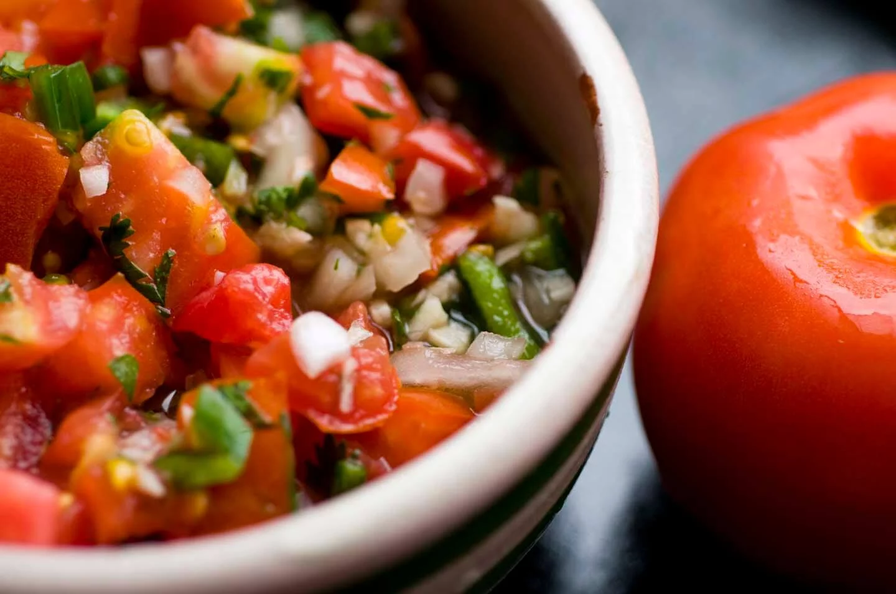

Pico de Gallo

Pico de Gallo its a delicious Mexican salsa made from diverce ingredients like tomato, onions, jalapeños,
lime juice, cilantro, and sometimes garlic.
This salsa is perfect for adding a delicious kick to tacos, grilled meats, veggies, or chipps.
Ingredients
- 5 ripe plum tomatoes, diced
- 2 cloves garlic, minced
- 1/4 cup diced yellow onion
- 1/4 cup chopped cilantro
- 2 jalapeños, seeded and diced
- 2 tablespoons freshly squeezed lime juice
- 1/2 tablespoon olive oil
- 1/2 teaspoon kosher salt
- 1/4 teaspoon ground cumin
Steps
- Stir together the tomatoes, garlic, onion, cilantro, jalapeño, lime juice, oil, salt, and cumin.
- Taste and adjust seasonings if needed. Let it rest for half an hour so the flavors can come together, then serve.
- Will last 1 day in the refrigerator, though it may get extra juicy. You can drain some of the juice if you like.